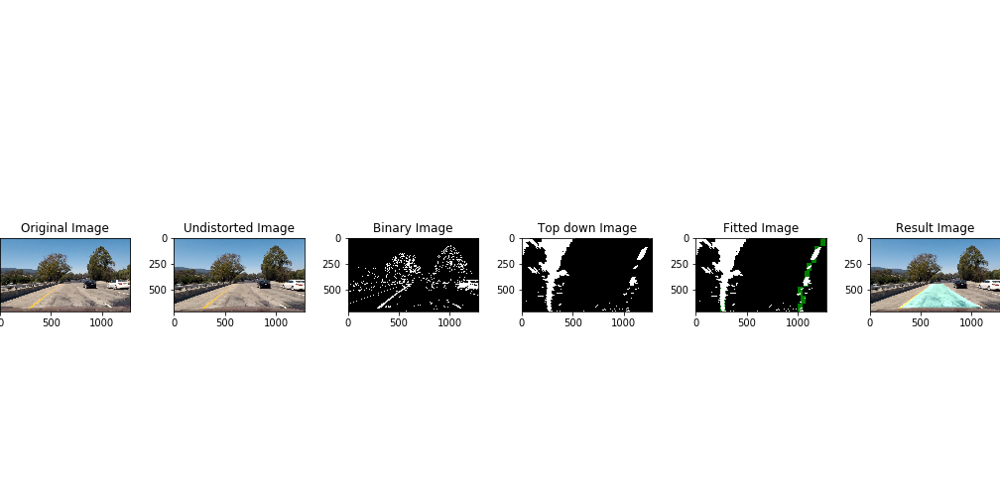

Advanced Lane Finding Project
The goals / steps of this project are the following:
- Compute the camera calibration matrix and distortion coefficients given a set of chessboard images.
- Apply a distortion correction to raw images.
- Use color transforms, gradients, etc., to create a thresholded binary image.
- Apply a perspective transform to rectify binary image ("birds-eye view").
- Detect lane pixels and fit to find the lane boundary.
- Determine the curvature of the lane and vehicle position with respect to center.
- Warp the detected lane boundaries back onto the original image.
- Output visual display of the lane boundaries and numerical estimation of lane curvature and vehicle position.
Rubric Points
Here I will consider the rubric points individually and describe how I addressed each point in my implementation.
Writeup / README
1. Provide a Writeup / README that includes all the rubric points and how you addressed each one. You can submit your writeup as markdown or pdf. Here is a template writeup for this project you can use as a guide and a starting point.
You're reading it!
Camera Calibration
1. Briefly state how you computed the camera matrix and distortion coefficients. Provide an example of a distortion corrected calibration image.
The code for this step is contained in the first 4 code cells of the IPython notebook located in "./proj.ipynb".
I start by preparing "object points", which will be the (x, y, z) coordinates of the chessboard corners in the world. Here I am assuming the chessboard is fixed on the (x, y) plane at z=0, such that the object points are the same for each calibration image. Thus, objp is just a replicated array of coordinates, and objpoints will be appended with a copy of it every time I successfully detect all chessboard corners in a test image. imgpoints will be appended with the (x, y) pixel position of each of the corners in the image plane with each successful chessboard detection.
I then used the output objpoints and imgpoints to compute the camera calibration and distortion coefficients using the cv2.calibrateCamera() function. I applied this distortion correction to the test image using the cv2.undistort() function and obtained this result:
Pipeline (single images)
0. Result by the pipeline step-by-step


1. Provide an example of a distortion-corrected image.
To demonstrate this step, I will describe how I apply the distortion correction to one of the test images like this one:
The same as undistorting the chessboard, an image from the vehicle camera is read in and the distortion correction is applied using the undistor function.
2. Describe how (and identify where in your code) you used color transforms, gradients or other methods to create a thresholded binary image. Provide an example of a binary image result.
I used a combination of color and gradient thresholds to generate a binary image (thresholding steps at code cells 5 & 6 in proj.ipynb). Here's an example of my output for this step.
3. Describe how (and identify where in your code) you performed a perspective transform and provide an example of a transformed image.
The code for my perspective transform includes a function called warper(image), which appears in code cell 7 in the file proj.ipynb. The warper(image) function takes as inputs an image (image). I chose the hardcode the source and destination points in the following manner:
src = np.float32( [[(img_size[0] / 2) - 55, img_size[1] / 2 + 100], [((img_size[0] / 6) - 10), img_size[1]], [(img_size[0] * 5 / 6) + 60, img_size[1]], [(img_size[0] / 2 + 55), img_size[1] / 2 + 100]])dst = np.float32( [[(img_size[0] / 4), 0], [(img_size[0] / 4), img_size[1]], [(img_size[0] * 3 / 4), img_size[1]], [(img_size[0] * 3 / 4), 0]])This resulted in the following source and destination points:
| Source | Destination |
|---|---|
| 585, 460 | 320, 0 |
| 203, 720 | 320, 720 |
| 1127, 720 | 960, 720 |
| 695, 460 | 960, 0 |
I verified that my perspective transform was working as expected by drawing the src and dst points onto a test image and its warped counterpart to verify that the lines appear parallel in the warped image.
4. Describe how (and identify where in your code) you identified lane-line pixels and fit their positions with a polynomial?
For this task I applied a convolution find_window_centroids(), which maximized the number of "hot" pixels in each window.
A convolution is the summation of the product of two separate signals, in our case the window template and the vertical slice of the pixel image.
You slide your window template across the image from left to right and any overlapping values are summed together, creating the convolved signal. The peak of the convolved signal is where there was the highest overlap of pixels and the most likely position for the lane marker.
5. Describe how (and identify where in your code) you calculated the radius of curvature of the lane and the position of the vehicle with respect to center.
Using the left and right points found with the find_window_centroids() function I was able to define curvature() which returned the center of the image as well as the left and right Radius of curvature using the following equation:
I did this in cell 9 & 10.
6. Provide an example image of your result plotted back down onto the road such that the lane area is identified clearly.
I implemented this step in lines # through # in my code in yet_another_file.py in the function map_lane(). Here is an example of my result on a test image:
Pipeline (video)
1. Provide a link to your final video output. Your pipeline should perform reasonably well on the entire project video (wobbly lines are ok but no catastrophic failures that would cause the car to drive off the road!).
Here's a link to my video result
Discussion
1. Briefly discuss any problems / issues you faced in your implementation of this project. Where will your pipeline likely fail? What could you do to make it more robust?
My pipeline failed on the harder_challenge_video.mp4. Since there's no much time left for me and I have one more project to finish )-: I'll go back here after finishing the other project.